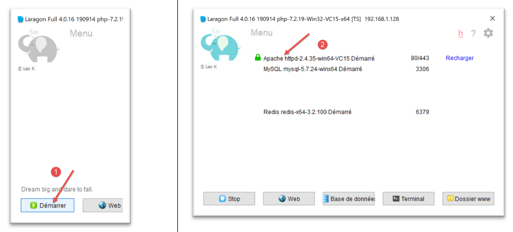
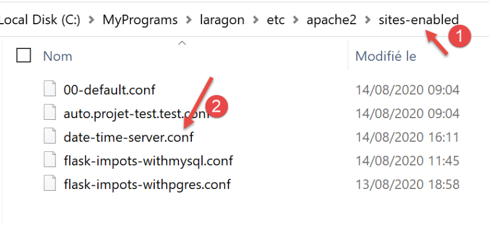
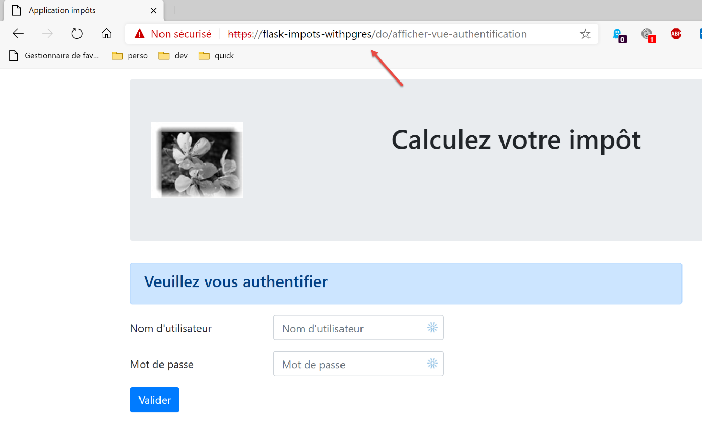

37. Exercício prático: Versão 17

Esta nova versão introduz as seguintes alterações:
- será portado para um servidor Apache/Windows;
- Para realizar esta portabilidade, a versão 17 contém todas as dependências necessárias na pasta [impots/http-servers/12]. Note-se que as versões anteriores obtinham as suas dependências de várias pastas espalhadas por todo o projeto [python-flask-2020];
37.1. Relocalização das dependências da aplicação

Note que a gestão das dependências da aplicação é tratada no script [syspath]. Na versão anterior, este script era o seguinte:
Precisamos de reposicionar todas as dependências cujo caminho absoluto depende da variável [root_dir] na linha 8, ou seja, as linhas 13–26.
O script [syspath] para a nova versão será o seguinte:
- linhas 8–27: todas as dependências são agora relativas à variável [script_dir] na linha 5;
- linhas 42–45: a variável [root_dir] foi removida da configuração do syspath;
- linha 10: as entidades da aplicação encontram-se na pasta [entities] [1];
- linha 12: a camada [dao] encontra-se na pasta [layers/dao] [2];
- linha 14: a camada [business] está na pasta [layers/business] [2];
- linha 16: os utilitários [Logger, SendMail] estão na pasta [utilities] [3];
- linhas 29–40: o Python Path da aplicação é calculado sem importar o módulo [myutils];

37.2. Testes
Nesta altura, a versão 17 deverá funcionar. Verifique-a.
37.3. Portar uma aplicação Python/Flask para um servidor Apache/Windows
37.3.1. Fontes
Para portar uma aplicação Flask para Apache/Windows, tive de pesquisar na Internet. Aqui está o link que me ajudou a começar: [https://medium.com/@madumalt/flask-app-deployment-in-windows-apache-server-mod-wsgi-82e1cfeeb2ed];
Utilizei as informações deste link, exceto no que diz respeito à configuração do servidor Apache. Para isso, utilizei um exemplo de configuração de servidor Apache do Laragon.
37.3.2. Instalação do módulo mod_wsgi do Python
A aplicação Python/Flask que desenvolvemos utilizou o servidor WSGI (Web Server Gateway Interface) [werkzeug] incluído no Flask. Este servidor é descrito |aqui|. O link [https://www.fullstackpython.com/wsgi-servers.html] descreve como funcionam os servidores WSGI. Existem vários |servidores WSGI|. Um deles é o servidor Apache a funcionar no modo WSGI. Esta é a solução adotada aqui porque o Laragon, que instalámos, vem com um servidor Apache.
Para que o servidor Apache possa hospedar uma aplicação Python, precisamos de instalar o módulo Python [mod_wsgi]. A instalação deste módulo é complicada, pois envolve uma compilação em C++. Para concluir a instalação com sucesso, é necessário um compilador Microsoft C++. Uma solução simples é instalar a versão mais recente do Visual Studio Community [https://visualstudio.microsoft.com/fr/vs/community/].
Se não precisar do Visual Studio para nada além do [mod_wsgi], pode limitar a instalação ao ambiente C++:

Assim que o compilador C++ estiver instalado, o módulo [mod_wsgi] é instalado num terminal do PyCharm:
(venv) C:\Data\st-2020\dev\python\cours-2020\python3-flask-2020\impots\http-servers\11>SET MOD_WSGI_APACHE_ROOTDIR=C:\MyPrograms\laragon\bin\apache\httpd-2.4.35-win64-VC15
(venv) C:\Data\st-2020\dev\python\cours-2020\python3-flask-2020\impots\http-servers\11>pip install mod_wsgi
Collecting mod_wsgi
Using cached mod_wsgi-4.7.1.tar.gz (498 kB)
Using legacy setup.py install for mod-wsgi, since package 'wheel' is not installed.
Installing collected packages: mod-wsgi
Running setup.py install for mod-wsgi ... done
Successfully installed mod-wsgi-4.7.1
- Linha 1: Definimos o valor da variável de ambiente [MOD_WSGI_APACHE_ROOTDIR]. Este valor corresponde à localização do servidor Apache no sistema de ficheiros. Aqui, essa localização é [<laragon>\bin\apache\httpd-2.4.35-win64-VC15], onde <laragon> é a pasta de instalação do Laragon. Pode obter esta localização de várias formas. Aqui está um exemplo obtido utilizando uma das opções do Laragon:

Em [1-3], o ficheiro [httpd.conf] é o ficheiro de configuração principal do servidor Apache. O ficheiro em questão é então aberto num editor de texto (Notepad++ abaixo):

Em [2], a pasta de instalação do Apache é a parte que precede a sequência [conf\httpd.conf].
Voltemos à instalação do módulo [mod_wsgi]:
- Linhas 3–9: instalação do módulo [mod_wsgi];
37.3.3. Configurar o servidor Apache do Laragon
Vamos configurar o servidor Apache do Laragon. Começamos pelo seu ficheiro de configuração principal [httpd.conf]:
Vamos até ao final do ficheiro [httpd.conf]:
…
IncludeOptional "C:/MyPrograms/laragon/etc/apache2/alias/*.conf"
IncludeOptional "C:/MyPrograms/laragon/etc/apache2/sites-enabled/*.conf"
Include "C:/MyPrograms/laragon/etc/apache2/httpd-ssl.conf"
Include "C:/MyPrograms/laragon/etc/apache2/mod_php.conf"
# python mod_wsgi
LoadModule wsgi_module "c:/data/st-2020/dev/python/cours-2020/python3-flask-2020/venv/lib/site-packages/mod_wsgi/server/mod_wsgi.cp38-win_amd64.pyd"
- A linha 8 foi adicionada ao ficheiro [httpd.conf] existente, no final do ficheiro. Ela indica ao servidor Apache onde encontrar um componente do módulo [mod_wsgi] que acabámos de instalar;
Uma maneira fácil de obter o caminho para a linha 8 é executar o seguinte comando num terminal do PyCharm:
(venv) C:\Data\st-2020\dev\python\cours-2020\python3-flask-2020\impots\http-servers\11>mod_wsgi-express module-config
LoadModule wsgi_module "c:/data/st-2020/dev/python/cours-2020/python3-flask-2020/venv/lib/site-packages/mod_wsgi/server/mod_wsgi.cp38-win_amd64.pyd"
WSGIPythonHome "c:/data/st-2020/dev/python/cours-2020/python3-flask-2020/venv"
Algumas documentações indicam que as linhas 2 e 3 devem ser adicionadas ao final do ficheiro [httpd.conf]. No meu caso, a linha 3 acima causou um erro (falta o módulo [encodings]). Por isso, não foi incluída no ficheiro [httpd.conf]. Apenas a linha 2 foi adicionada. Os significados dos vários parâmetros do módulo [mod_wsgi] que podem ser utilizados nos ficheiros de configuração do Apache estão descritos |aqui|.
A seguir, vamos ativar o protocolo HTTPS no servidor Apache:

- Em [1-4], ativamos o protocolo HTTPS no servidor Apache;
A partir de agora, poderemos utilizar URLs [https://serveur/chemin];
Para configurar o Apache para servir uma aplicação Flask, o link mencionado |acima| utiliza hosts virtuais. O Laragon também oferece gestão de hosts virtuais:

- Em [1-3], solicitamos ao Laragon que crie automaticamente hosts virtuais;
O próximo passo é criar um projeto web com o Laragon:
 |
 |  |
- Em [1-3], crie um projeto PHP vazio;
- Em [4-8], o Laragon criou um site virtual denominado [auto.projet-test.test], configurado pelo ficheiro [auto.projet-test.test.conf] [8] na pasta [sites-enabled] [7]. Esta pasta encontra-se em [<laragon>\etc\apache2\sites-enabled], onde [laragon] é a pasta de instalação do Laragon;
Embora isto não faça parte do que estamos a fazer neste momento, talvez tenha curiosidade em consultar o site [test-project] que acabámos de criar:

- Em [1-5], foi criado um projeto vazio. Trata-se de um projeto PHP localizado na pasta [<laragon>/www], onde [laragon] é a pasta de instalação do Laragon;
Agora, vamos examinar o ficheiro [auto.projet-test.test.conf] gerado pelo Laragon na pasta [<laragon>\etc\apache2\sites-enabled]:
define ROOT "C:/MyPrograms/laragon/www/projet-test/"
define SITE "projet-test.test"
<VirtualHost *:80>
DocumentRoot "${ROOT}"
ServerName ${SITE}
ServerAlias *.${SITE}
<Directory "${ROOT}">
AllowOverride All
Require all granted
</Directory>
</VirtualHost>
<VirtualHost *:443>
DocumentRoot "${ROOT}"
ServerName ${SITE}
ServerAlias *.${SITE}
<Directory "${ROOT}">
AllowOverride All
Require all granted
</Directory>
SSLEngine on
SSLCertificateFile C:/MyPrograms/laragon/etc/ssl/laragon.crt
SSLCertificateKeyFile C:/MyPrograms/laragon/etc/ssl/laragon.key
</VirtualHost>
- linha 1: o diretório raiz do projeto criado no sistema de ficheiros;
- linha 2: o nome do servidor virtual. Os URLs para este servidor terão o formato [http(s)://test-project.test/path];
- linhas 4–12: configuração do site virtual para a porta 80 (linha 4) e o protocolo HTTP;
- linhas 14–27: configuração do host virtual para a porta 443 (linha 14) e o protocolo HTTPS;
Vamos ver como funciona um servidor virtual. Primeiro, vamos iniciar os servidores Apache e PHP:

Em seguida, utilizando um navegador, solicitamos a URL [http://projet-test.test/]:

- em [1], o URL solicitado;
- em [2], foi utilizado o protocolo HTTP;
- em [3], como o projeto [projet-test] está vazio, obtemos o índice da sua pasta (lista do seu conteúdo), um índice vazio;
Agora, vamos solicitar a URL segura [https://projet-test.test/]:

- Em [1-2], obtemos a mesma resposta que antes, mas utilizando o protocolo HTTPS [1];
A criação do servidor virtual [test-project.test] criou uma nova entrada no ficheiro [<windows>/system32/drivers/etc/hosts]:

# Copyright (c) 1993-2009 Microsoft Corp.
#
# This is a sample HOSTS file used by Microsoft TCP/IP for Windows.
#
# This file contains the mappings of IP addresses to host names. Each
# entry should be kept on an individual line. The IP address should
# be placed in the first column followed by the corresponding host name.
# The IP address and the host name should be separated by at least one
# space.
#
# Additionally, comments (such as these) may be inserted on individual
# lines or following the machine name denoted by a '#' symbol.
#
# For example:
#
# 102.54.94.97 rhino.acme.com # source server
# 38.25.63.10 x.acme.com # x client host
# localhost name resolution is handled within DNS itself.
# 127.0.0.1 localhost
# ::1 localhost
127.0.0.1 projet-test.test #laragon magic!
- Linha 23: O endereço IP para o nome [test-project.test] é 127.0.0.1, ou seja, o endereço de [localhost] (linha 20), a máquina local. Assim, quando digita o URL [http://projet-test.test/chemin] num navegador, o pedido é enviado para o endereço 127.0.0.1 na porta 80. O servidor Apache na máquina local (localhost) responde então.
Pode perguntar-se por que razão, quando digita o pedido [http://projet-test.test/], o servidor Apache utiliza a configuração do ficheiro [<laragon>\etc\apache2\sites-enabled\auto.projet-test.test.conf]:

Para compreender isto, precisamos de ver o que o navegador envia ao servidor Apache ao efetuar este pedido. Vamos fazer isto com o Postman:

- Em [1-3], enviamos uma solicitação HTTPS [1];
- em [4], o Postman indica que não reconheceu o certificado de segurança. O protocolo HTTPS estabelece uma ligação encriptada entre o cliente web (aqui, o Postman) e o servidor Apache. Esta ligação encriptada é estabelecida através de certificados trocados entre o cliente e o servidor. É o servidor que inicia o processo de estabelecimento da ligação encriptada, enviando um certificado de segurança ao cliente. Para que este certificado seja aceite pelo cliente, tem de ser assinado — ou seja, adquirido junto de empresas autorizadas a emitir certificados de segurança. Quando ativámos o protocolo HTTPS do Laragon, o próprio Laragon criou o certificado de segurança. Diz-se então que o certificado é autoassinado. A maioria dos clientes web emite um aviso quando recebe um certificado autoassinado. É isso que o Postman faz em [4]. A maioria dos clientes web oferece então a possibilidade de desativar a verificação do certificado de segurança enviado pelo servidor. É isso que o Postman oferece em [5];
Clicamos no link [5] para desativar a verificação SSL (Secure Sockets Layer). O SSL/TLS (Transport Layer Security) é um protocolo de segurança que cria um canal de comunicação seguro entre duas máquinas na Internet. Este é o protocolo utilizado aqui pelo Apache. A resposta é a seguinte:

Recebemos a mesma página que com um navegador tradicional. Agora, vamos ver o diálogo cliente/servidor na consola do Postman (Ctrl-Alt-C):
- Linha 6: O cabeçalho HTTP [Host] especifica o nome do servidor de destino do cliente web. Este é o princípio subjacente aos servidores virtuais. Num único endereço IP (aqui 127.0.0.1), um servidor web pode hospedar vários sites com nomes diferentes. O cabeçalho HTTP [Host] permite ao cliente especificar a que servidor (aqui, o que se encontra no endereço 127.0.0.1) se está a dirigir;
Então, o que faz o Apache?
Quando é iniciado, o Apache lê todos os ficheiros de configuração encontrados no diretório [[<laragon>\etc\apache2\sites-enabled]]:
Cada ficheiro de configuração define um servidor virtual. Por exemplo, no ficheiro [auto.projet-test.test.conf], encontrará a seguinte linha:
define ROOT "C:/MyPrograms/laragon/www/projet-test/"
define SITE "projet-test.test"
…
A linha 2 define o servidor virtual [test-project.test]. O ficheiro [auto.projet-test.test.conf] é a configuração deste servidor virtual. Como lê todos os ficheiros de configuração na pasta [<laragon>\etc\apache2\sites-enabled] no arranque, o servidor Apache sabe que existe um servidor virtual chamado [projet-test.test]. Assim, quando recebe o seguinte pedido HTTPS do cliente Postman:
Reconhece que o pedido é dirigido ao servidor virtual [test-project.test] (linha 6) e que este existe. Em seguida, utiliza a configuração do servidor virtual [test-project.test] para responder ao cliente Postman.
37.4. Criar o seu primeiro servidor virtual Apache
Agora que sabemos para que servem os servidores virtuais e como configurá-los, vamos criar um. Será utilizado para executar uma aplicação Python Flask instalada numa pasta [Apache] da versão 17, atualmente a ser implementada no servidor Apache:
Colocámos a aplicação desenvolvida na secção |link| — um serviço web de data/hora — na pasta [http-servers/12/apache/example]:

O servidor [date_time_server.py] é o seguinte:
A aplicação Flask é referenciada pelo identificador [application] (linhas 14, 43, 44). Este nome é obrigatório. Se referenciar a aplicação Flask com um identificador diferente, a aplicação não funcionará e exibirá uma mensagem de erro indicando que não consegue encontrar o URL solicitado. Esta mensagem de erro não fornece qualquer indicação sobre a origem do erro. Por isso, deve ter cuidado com isto.
O ficheiro HTML referido na linha 34 é o seguinte:
<!DOCTYPE html>
<html lang="fr">
<head>
<meta charset="UTF-8">
<title>Date et heure du moment</title>
</head>
<body>
<b>Date et heure du moment : {{page.date_heure}}</b>
</body>
</html>
- [date-time-server] será o servidor virtual que hospeda esta aplicação. Será configurado através do ficheiro [<laragon>\etc\apache2\sites-enabled\date-time-server.conf] (note que este nome é arbitrário — o Apache lê todos os ficheiros em [sites-enabled] para descobrir os sites virtuais hospedados);
Primeiro, obtemos este ficheiro copiando o ficheiro [auto.projet-test.test.conf] e, em seguida, modificamo-lo.

O ficheiro [date-time-server.conf] terá o seguinte aspeto:
- Linha 7: Atribua um nome ao servidor virtual configurado pelo ficheiro;
- linha 2: define o valor da variável [ROOT] utilizada nas linhas 14 e 27;
- Linhas 14 e 27: Especifique o caminho para o script Python que deve ser executado quando o servidor virtual receber um pedido. Aqui, especificamos que as solicitações para o servidor [date-time-server] são tratadas pelo script Python [date_time_server.py]. Esta diferença em relação ao ficheiro [auto.projet-test.test.conf] decorre do facto de o primeiro ter configurado um servidor PHP, enquanto o ficheiro [date-time-server.conf] configura um servidor Python;
- Linhas 14 e 27: O atributo [WSGIScriptAlias /] especifica aqui que a raiz do servidor [date-time-server] será [/]. Assim, os URLs da aplicação assumirão a forma [http(s)://date-time-server/path];
- Linhas 14 e 27: Podemos atribuir uma raiz diferente à aplicação, por exemplo [WSGIScriptAlias /show]. Neste caso, os URLs da aplicação assumirão o formato [http(s)://show/date-time-server/path];
Também precisamos de adicionar uma linha ao ficheiro [<windows>/system32/drivers/etc/hosts]:
Adicionamos a linha 25 para atribuir o endereço IP [127.0.0.1] ao servidor virtual [date-time-server].
Vamos verificar tudo. Iniciamos o servidor Apache:
Em seguida, acedemos à URL [https://date-time-server] utilizando um navegador:
- em [1], a URL solicitada;
- em [3], a resposta do servidor;
- em [2], o navegador indica que a ligação HTTPS não é segura porque detetou que o certificado enviado pelo servidor Apache era autoassinado;
Agora, no ficheiro [date-time-server.conf], vamos adicionar um alias às linhas 14 e 27:
WSGIScriptAlias /show-date-time "${ROOT}/date_time_server.py"
A alteração não é reconhecida imediatamente pelo servidor Apache. É necessário recarregá-lo:

Em seguida, solicitamos a URL [https://date-time-server/show-date-time]. A resposta do servidor é a seguinte:

37.5. Portar a aplicação de cálculo de impostos para o Apache / Windows
O diretório [apache] [2] é inicialmente criado através da cópia do diretório [main]. É importante que ambos estejam no mesmo nível, para que os caminhos no script [syspath.py] copiados de [1] para [2] permaneçam válidos. Para evitar interferir com a aplicação [impots / http-servers/ 12] em funcionamento, colocamos a configuração a ser executada pelo servidor Apache em [apache];

- o ficheiro [config] em [2] é igual ao ficheiro [config] em [1];
- o ficheiro [syspath] em [2] é igual ao ficheiro [syspath] em [1];
- o ficheiro [main_withmysql] em [2] é o ficheiro [main] de [1] com as seguintes modificações:
O script principal [main] recebeu um parâmetro [mysql / pgres] que lhe indicava qual o SGBD a utilizar. O script [main_withmysql] utiliza o SGBD MySQL:
A linha 7 define o SGBD como MySQL.
- O ficheiro [main_withpgres] de [2] é o ficheiro [main] de [1] com as seguintes alterações: utiliza o SGBD PostgreSQL:
Na linha 7, definimos o SGBD como PostgreSQL.
Depois de fazer isso, criamos o seguinte script [main_withmysql.wsgi] (o sufixo utilizado não importa):
O script [main_withmysql.wsgi] será o alvo executado pelo servidor Apache no modo WSGI:
- O alvo do servidor Apache poderia ter sido o script [main_withmysql.py], tal como foi feito anteriormente com o script [date_time_server.py]. Mas isso teria exigido uma ligeira modificação:
- ao contrário do que acontece ao executar um script de consola, com o Apache, o diretório que contém o alvo [main_withmysql.py] não faz parte do Python Path. Por isso, a linha 6 do script [main_withmysql.py] causa um erro;
- a segunda alteração que teria sido necessária é que, em [main_withmysql], a aplicação Flask é referenciada pelo identificador [app]. Sabemos que, para o Apache/WSGI, ela também deve ser referenciada por um identificador [application];
- Em vez de modificar [main_withmysql.py], alteramos o destino do Apache. Agora será o script [main_withmysql.wsgi] acima:
- linhas 1–7: adicionamos o diretório do script ao Python Path. Como resultado, a linha 6 do [main_withmysql.py] já não causa um erro;
- linhas 9–10: importar [main_withmysql.py] aciona a sua execução. Além disso, referenciamos a aplicação Flask [app] encontrada em [main_withmysql.py] utilizando o identificador [application] exigido pelo Apache no modo WSGI;
Fazemos o mesmo com o script [main_withpgres.wsgi]:
Agora temos os alvos executáveis para o servidor Apache. Precisamos agora de criar dois servidores virtuais, um para cada alvo.
Em [<laragon>\etc\apache2\sites-enabled], criamos o ficheiro [flask-imports-withmysql.conf] (o nome não importa):

# dossier du script .wsgi
define ROOT "C:/Data/st-2020/dev/python/cours-2020/python3-flask-2020/impots/http-servers/12/apache"
# nom du site web configuré par ce fichier
# ici il s'appellera flask-impots-withmysql
# les URL seront du type http(s)://flask-impots-withmysql/path
define SITE "flask-impots-withmysql"
# mettre l'adresse IP 127.0.0.1 pour site SITE dans c:/windows/system32/drivers/etc/hosts
# mettre ici les chemins des bibliothèques Python à utiliser - les séparer par des virgules
# ici les bibliothèques d'un environnement virtuel Python
WSGIPythonPath "C:/Data/st-2020/dev/python/cours-2020/python3-flask-2020/venv/lib/site-packages"
# Python Home - nécessaire uniquement s'il y a plusieurs versions de Python installées
# WSGIPythonHome "C:/Program Files/Python38"
# URL HTTP
<VirtualHost *:80>
# avec l'alias / les URL auront la forme /{prefixe_url}/action/...
# avec l'alias /impots les URL auront la forme /impots/{prefixe_url}/action/...
# où [prefixe_url] est défini dans parameters.py
WSGIScriptAlias / "${ROOT}/main_withmysql.wsgi"
DocumentRoot "${ROOT}"
ServerName ${SITE}
ServerAlias *.${SITE}
<Directory "${ROOT}">
AllowOverride All
Require all granted
</Directory>
</VirtualHost>
# URL sécurisées avec HTTPS
<VirtualHost *:443>
# avec l'alias / les URL auront la forme /{prefixe_url}/action/...
# avec l'alias /impots les URL auront la forme /impots/{prefixe_url}/action/...
# où [prefixe_url] est défini dans parameters.py
WSGIScriptAlias / "${ROOT}/main_withmysql.wsgi"
DocumentRoot "${ROOT}"
ServerName ${SITE}
ServerAlias *.${SITE}
<Directory "${ROOT}">
AllowOverride All
Require all granted
</Directory>
SSLEngine on
SSLCertificateFile C:/MyPrograms/laragon/etc/ssl/laragon.crt
SSLCertificateKeyFile C:/myprograms/laragon/etc/ssl/laragon.key
</VirtualHost>
- linha 2: a raiz da aplicação, a pasta [apache] que criámos;
- linhas 23, 38: o destino [main_withmysql.wsgi] que criámos:
- linha 7: o servidor virtual será denominado [flask-impots-withmysql];
- linha 13: a diretiva [WSGIPythonPath] permite-nos adicionar pastas ao Python Path. Aqui, o Apache não tem conhecimento de que utilizámos um ambiente virtual para desenvolver a aplicação e de que todos os módulos utilizados pela aplicação se encontram nesse ambiente virtual. Portanto, na linha 13, adicionamos a pasta que contém todos os módulos do ambiente virtual utilizado. Uma opção é copiar este diretório para outro local no sistema de ficheiros e referenciar esse local. Outra opção é adicionar este diretório ao Python Path diretamente dentro do destino [main_withmysql.wsgi] (esta é provavelmente a melhor solução);
- linha 16: podemos indicar ao Apache o diretório de instalação do Python no sistema de ficheiros. Normalmente, este diretório está incluído no PATH do computador e, muitas vezes, esta linha é desnecessária (como foi o caso aqui). No entanto, podem existir várias instalações do Python no computador e a desejada pode não estar incluída no PATH do computador. Nesse caso, esta linha resolve o problema;
Da mesma forma, crie um ficheiro [flask-impots-withpgres.conf]:
# dossier du script .wsgi
define ROOT "C:/Data/st-2020/dev/python/cours-2020/python3-flask-2020/impots/http-servers/12/apache"
# nom du site web configuré par ce fichier
# ici il s'appellera flask-impots-withmysql
# les URL seront du type http(s)://flask-impots-withmysql/path
define SITE "flask-impots-withpgres"
# mettre l'adresse IP 127.0.0.1 pour site SITE dans c:/windows/system32/drivers/etc/hosts
# mettre ici les chemins des bibliothèques Python à utiliser - les séparer par des virgules
# ici les bibliothèques d'un environnement virtuel Python
WSGIPythonPath "C:/Data/st-2020/dev/python/cours-2020/python3-flask-2020/venv/lib/site-packages"
# Python Home - nécessaire uniquement s'il y a plusieurs versions de Python installées
# WSGIPythonHome "C:/Program Files/Python38"
# URL HTTP
<VirtualHost *:80>
# avec l'alias / les URL auront la forme /{prefixe_url}/action/...
# avec l'alias /impots les URL auront la forme /impots/{prefixe_url}/action/...
# où [prefixe_url] est défini dans parameters.py
WSGIScriptAlias / "${ROOT}/main_withpgres.wsgi"
DocumentRoot "${ROOT}"
ServerName ${SITE}
ServerAlias *.${SITE}
<Directory "${ROOT}">
AllowOverride All
Require all granted
</Directory>
</VirtualHost>
# URL sécurisées avec HTTPS
<VirtualHost *:443>
# avec l'alias / les URL auront la forme /{prefixe_url}/action/...
# avec l'alias /impots les URL auront la forme /impots/{prefixe_url}/action/...
# où [prefixe_url] est défini dans parameters.py
WSGIScriptAlias / "${ROOT}/main_withpgres.wsgi"
DocumentRoot "${ROOT}"
ServerName ${SITE}
ServerAlias *.${SITE}
<Directory "${ROOT}">
AllowOverride All
Require all granted
</Directory>
SSLEngine on
SSLCertificateFile C:/MyPrograms/laragon/etc/ssl/laragon.crt
SSLCertificateKeyFile C:/myprograms/laragon/etc/ssl/laragon.key
</VirtualHost>
Guardamos todos estes ficheiros, iniciamos o servidor Apache e as bases de dados MySQL e PostgreSQL. A aplicação está configurada com o prefixo de URL [/do] e [with_csrftoken=False] (sem token CSRF) em [configs/parameters.py]. Solicitamos a URL [https://flask-impots-withmysql/do]. A resposta do servidor é a seguinte:

Solicitamos agora a URL [https://flask-impots-pgres/do]. A resposta é a seguinte:

Ambas as aplicações estão a funcionar normalmente.
Agora vamos modificar o parâmetro [WSGIScriptAlias] no ficheiro [flask-imports-withmysql.conf]:
- nas linhas 11 e 20, o alias WSI é agora [/impots];
Paramos e reiniciamos o servidor Apache, depois solicitamos a URL [https://flask-impots-withmysql/impots/do]. A resposta do servidor é a seguinte:

Ocorre uma falha. A URL [1] indica-nos a causa. Deveria ter sido [https://flask-impots-withmysql/impots/do/afficher-vue-authentification]. Falta o alias WSGI. Trata-se de um erro na nossa aplicação. Ela sabe como lidar com um prefixo de URL (/do está presente). Poder-se-ia pensar que adicionar o prefixo [/imports/do] à nossa aplicação resolveria o problema anterior. Mas não. Encontramos então outros tipos de problemas. O alias WSGI não se comporta como um prefixo de URL.
Vamos tentar compreender o que aconteceu. Solicitámos a URL [https://flask-impots-withmysql/impots/do]. Esperávamos ver a vista de autenticação. Em [1] acima, vemos que a aplicação solicitou a sua exibição, mas não com a URL correta. Vamos examinar o caminho do pedido [https://flask-impots-withmysql/impots/do].
Primeiro, foi executada a seguinte rota (configs/routes.py):
# les routes de l'application Flask
# racine de l'application
app.add_url_rule(f'{prefix_url}/', methods=['GET'],
view_func=routes.index)
A rota na linha 3 é [https://flask-impots-withmysql/impots/do] no nosso exemplo. Podemos ver que a rota foi despojada da parte [https://flask-impots-withmysql/impots] para se tornar simplesmente [/do]. Quanto à parte [https://flask-impots-withmysql], isto é normal; o nome do servidor não está incluído na rota. Mas podemos ver que também não inclui o alias WSGI [/imports]. Este é um ponto importante. Mesmo com um alias WSGI, as nossas rotas iniciais permanecem válidas.
Agora vamos ver o que a função [index] na linha 4 (configs/routes_without_csrftoken) faz:
Na linha 4, somos redirecionados para o URL da função [init_session]. No ficheiro [configs/routes.py], esta função foi associada à rota [/do/init-session/html]:
# init-session
app.add_url_rule(f'{prefix_url}/init-session/<string:type_response>{csrftoken_param}', methods=['GET'],
view_func=routes.init_session)
Linha 2: No nosso teste, [csrftoken_param] é uma cadeia de caracteres vazia. A aplicação não processa um token CSRF aqui.
A função [init_session] é definida da seguinte forma (configs/routes_without_csrftoken):
Linha 4: Iniciamos a cadeia de processamento da ação [init-session]. Esta cadeia termina da seguinte forma em [responses/HtmlResponse]:
…
# now it's time to generate the URL redirection, not forgetting the CSRF token if requested
if config['parameters']['with_csrftoken']:
csrf_token = f"/{generate_csrf()}"
else:
csrf_token = ""
# redirect response
return redirect(f"{config['parameters']['prefix_url']}{ads['to']}{csrf_token}"), status.HTTP_302_FOUND
A ação [init-session] é uma ação ADS (Action Do Something) que termina com um redirecionamento para uma vista, na linha 9. É aí que reside o problema. A função [redirect] na linha 9 não adiciona automaticamente o alias WSGI ao URL de redirecionamento. Isto é mostrado na captura de ecrã acima. O alias /impots está em falta no URL de redirecionamento.
A versão seguinte fornece uma solução para o problema do alias WSGI.